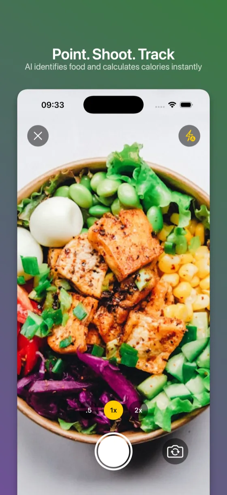
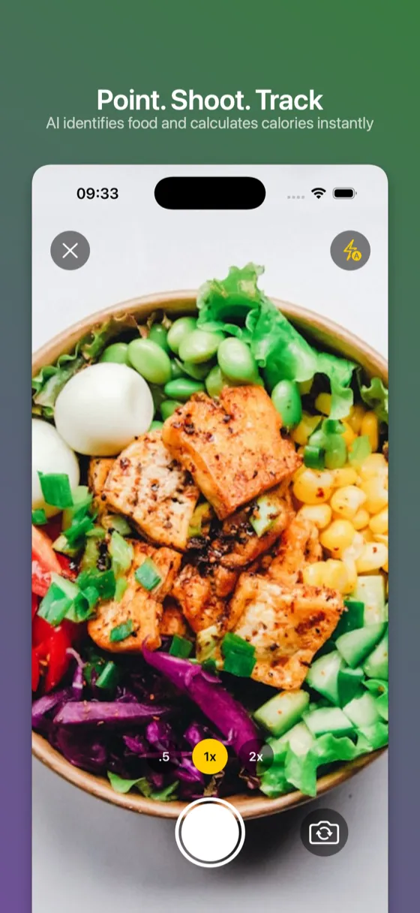
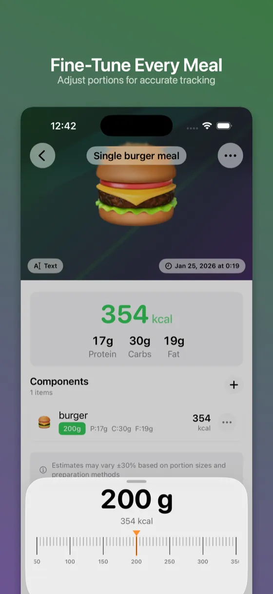
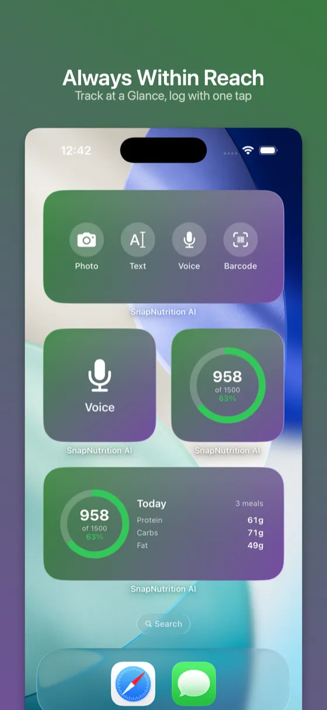
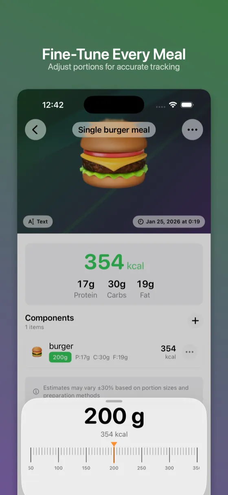
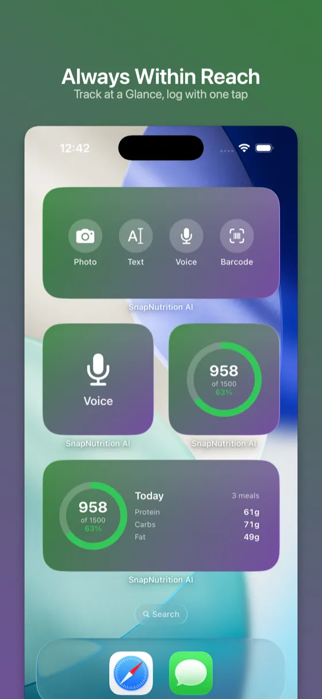

SnapNutrition AI — Free AI Calorie Tracker & Food Diary
Snap a Photo. Count Calories Instantly. 100% Free.
No subscription. No ads. No account needed. Track calories, macros, and nutrition with AI.

Looking for a free calorie tracker that actually works without a subscription? SnapNutrition AI is a free AI food diary and calorie counter app for iPhone, iPad, and Apple Watch. Snap a photo, scan a barcode, speak, or type — and get instant calorie, protein, carb, and fat estimates powered by AI. Log calories from your wrist with the Apple Watch app, or track at a glance with Home Screen, Lock Screen, and Control Center widgets. No monthly fees. No ads. No account required. Perfect for weight loss, muscle gain, or simply eating healthier in 2026. Unlike apps like MyFitnessPal or Lose It! that charge $5–15/month for AI features, SnapNutrition AI gives you unlimited AI food recognition for just pennies per scan through your own API key. This is the best free diet app and food tracker for iOS users who value privacy and flexibility.
See the Best Free Calorie Counter in Action
 


 



Free AI Food Scanner — Multiple Ways to Track
Photo Calorie Counter
Take a photo of any meal, snack, or ingredient and the AI food recognition instantly identifies what you're eating and calculates calories, protein, carbs, and fat. Works for restaurant meals, homemade dishes, and everything in between.
Gallery Import
Select existing photos from your gallery to analyze meals you've already captured with the free AI scanner
Barcode Food Scanner
Scan product barcodes for instant nutrition facts on packaged foods. Works like a free food database scanner — just point your iPhone camera at any barcode.
Text Input
Type what you ate and AI will estimate the calories and macros — great for homemade meals and restaurant dishes
Voice Calorie Tracking
Say "I had a chicken salad and a glass of orange juice" and AI logs it instantly. Hands-free voice calorie tracking — perfect while cooking or on the go.
Macro Tracker & Statistics
Track your daily, weekly, and all-time calorie and macro progress with beautiful charts
Apple Watch App
Log calories straight from your wrist with voice input. See your daily calorie summary, macro rings, and goal progress — all on Apple Watch with complications.
Home & Lock Screen Widgets
Track at a glance without opening the app. Calorie goal progress on your Home Screen, Lock Screen, and Control Center quick actions for instant scanning.
How the Free AI Calorie Tracker Works
Add Your API Key
Use your own Anthropic or OpenAI API key. No subscription — you only pay for what you use (pennies per scan).
Snap Your Food
Take a photo, scan a barcode, type, or speak. The AI food scanner works however you prefer.
Track Progress
Set your daily calorie goal and watch your macro progress on the free statistics dashboard.
Why SnapNutrition AI is the Best Free Calorie App
100% Free — No Subscription
No monthly fees, no premium tiers, no ads. Bring your own API key and pay only for actual AI usage.
iCloud Sync
Your calorie data syncs seamlessly across all your Apple devices via your personal iCloud.
Multilingual Support
Use the free calorie tracker in your preferred language with full localization support.
Metric & Imperial
Switch between measurement systems based on your preference — grams or ounces, your choice.
Frequently Asked Questions
Is SnapNutrition AI really free?
Yes, SnapNutrition AI is 100% free with no subscription fees, no ads, and no hidden costs. You bring your own API key from Anthropic or OpenAI and pay only for the AI calls you make, which typically costs just pennies per scan.
How does the AI food scanner work?
Simply take a photo of your food, and the AI analyzes the image to identify ingredients and estimate calories, protein, carbs, and fat. You can also scan barcodes, type a description, or use voice input for hands-free tracking.
What is the best free calorie tracker app in 2026?
SnapNutrition AI is the best free AI calorie tracker in 2026 because it offers unlimited tracking with no subscription. Unlike other apps that charge $5-15 per month, you only pay for actual AI usage through your own API key — typically just a few cents per day.
How accurate is AI calorie counting?
AI calorie estimates are typically within 30% accuracy based on portion sizes and preparation methods. SnapNutrition AI displays this disclaimer and allows you to manually adjust portions and ingredients for better accuracy.
Is my data private?
Yes, SnapNutrition AI has no backend servers. All your data stays on your device and syncs only through your personal iCloud account. Food images are sent directly to your chosen AI provider (Anthropic or OpenAI) for analysis — we never see your data.
What API key do I need?
You can use either an Anthropic (Claude) or OpenAI (GPT) API key. Both work great for food recognition. Get your key from their respective websites, paste it into the app settings, and you're ready to track calories for free.
Is SnapNutrition AI good for weight loss?
Yes, SnapNutrition AI is excellent for weight loss. Set a daily calorie goal, track every meal with the AI food scanner, and monitor your calorie intake vs. your target. Studies show that food logging is one of the most effective strategies for weight management. The AI scanner makes logging fast enough that you'll actually stick with it.
How does SnapNutrition AI compare to MyFitnessPal?
SnapNutrition AI is free with no subscription, while MyFitnessPal Premium costs $19.99/month ($240/year). SnapNutrition AI offers unlimited AI photo scanning, requires no account, has no ads, and stores no data on external servers. MyFitnessPal has a larger food database (20M+ foods) and exercise tracking, but locks AI features behind a paywall.
What is BYOK (Bring Your Own Key)?
BYOK stands for Bring Your Own Key. Instead of charging a subscription, SnapNutrition AI lets you use your own API key from Anthropic or OpenAI. You pay the AI provider directly for usage — typically $0.01-0.03 per food scan. This model makes the app truly free while giving you access to the latest AI models.
Does SnapNutrition AI work for keto, vegan, or other diets?
Yes, SnapNutrition AI tracks all macronutrients (protein, carbs, fat) and total calories, making it compatible with any diet — keto, low-carb, vegan, Mediterranean, paleo, IIFYM, or any other approach. The AI identifies foods regardless of dietary style.
Can I use SnapNutrition AI on iPhone, iPad, and Apple Watch?
Yes, SnapNutrition AI is available on iPhone, iPad, and Apple Watch with iCloud sync across all your Apple devices. The Watch app lets you log calories by voice and view your daily progress right from your wrist. An Android version is not yet available.
Your Privacy Matters
No account required. No backend servers. No data collection. All your calorie and nutrition data stays on your device and syncs only through your personal iCloud. Food images are sent directly to your chosen AI provider for analysis — we never see or store your information.